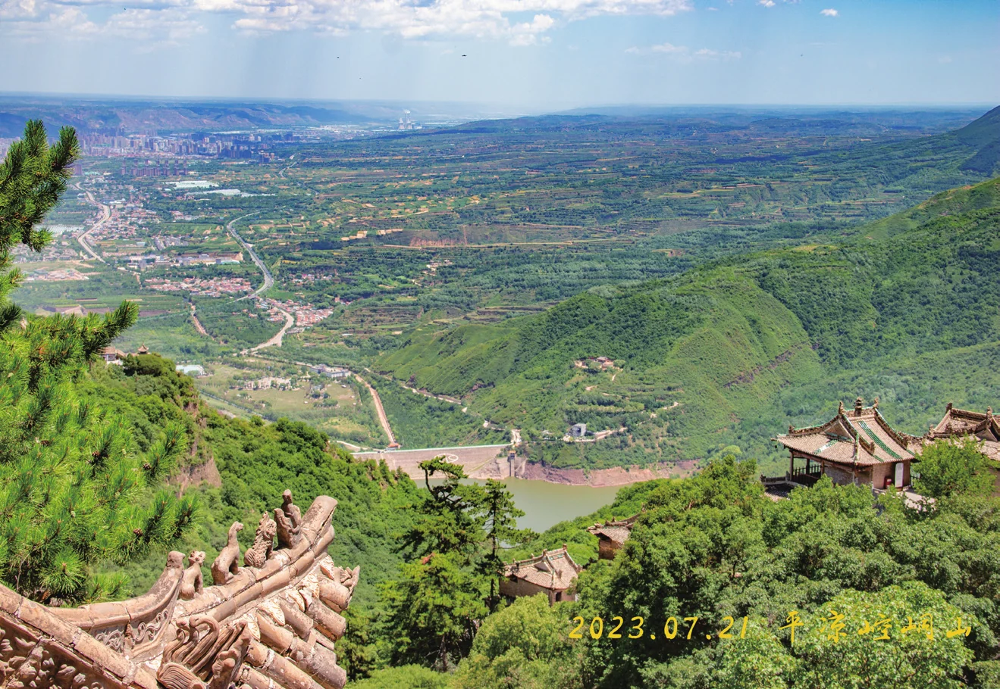

暑期特写 / 实践团
路
原刊 18 页
← 返回目录暑期路上印象最深刻的是Day20 从默勒到祁连的这一天。这天在云雾缭绕中大伙儿一起爬上了大冬树山垭口，这里也是我们整个暑期路线的海拔最高点。到了垭口，雨势渐大，拍完了合照开始长距离放坡，大雨滂沱，冷风刺骨，好在最终所有人都安全抵达坡底。这天也是我在暑期路上的最后一天，晚上大家一起吃蛋糕、聊天、唱歌。
我不知道暑期是不是给每个暑期队员的礼物，但我笃定地相信进入 23 实践团，是命运在2023 年给予我最棒的礼物。我喜欢骑车，喜欢在骑车时放空思绪，喜欢和团众一起骑车，喜欢他们的插科打诨。现在回想暑期，只觉得时间太短太短。这一个月，让暑期结束快半年的我，每次打开手机里的照片，回想暑期发生的事情，都觉得梦幻和欢喜。
二姐唱歌超好听，执着补胎，在二姐这里吃到了好多美食，后旗若有二姐，绝对快乐翻倍。团儿抹了一种只看得出白色质地，却看不到防晒效果的防晒霜，每天驮着备件包，组织大家开会，有时候我会想象团儿如果不是团儿会是什么样子，团儿是我心里最好的、唯一的团儿。喜欢团儿和四姐的友爱对话，每次在旁边听着就有一种魔法欢乐喷泉在洒水的感觉。四姐每次都会在天冷的时候提醒我们多穿衣服，多喝热水。善于学习的四姐还在暑期快结束时学会了推人，真让我羡慕。五哥的换胎技能也在暑期得到了充分的锻炼，尽管嘴贫但做事杠杠滴靠谱，经常冒出一些金句让人捧腹大笑。六六是全方位的六，双前站，前旗助，队记负责，有时听六说话像是在听相声，有时沉默像是大人模样，暑期路上六六给予了我们许多快乐和感动。七七丰富的情感让我觉得她是一位诗人，文字和话语总是如此的生动和具体，仿佛一切都在眼前，一幕幕的展开。想起八哥的经典台词，眼前浮现的是八哥的经典手势。八哥像是动漫里的热血少年，一往无前的坦荡模样让人敬佩。九九的温柔与执着，浪漫与坚定，赤子之心永远会被守护。伟大的十哥，我们的MVP，我们的押后负责，可爱的十哥叉腰做法，佛祖保佑全团车胎不扎。小哥带着无人机拍照拍视频，每天都有新鲜的素材。收到小哥制作的明信片，每一张都是独属于 23 实践团的记忆。小弟古灵精怪，说话一针见血。小弟一开口，就知有没有。小妹活！我们的队医负责，驮着热水瓶，虽然平时说话不多，但做事百分百靠谱。每次提起暑期，脑海里最先浮现的是我们的笑容，我们的欢歌笑语，我们骑车经过的路，以及在实践途中采访的人。
我爱 23 实践团的每个人，在暑期路上练习爱人和被爱的能力，让我在每个普通的日子都有机会书写正在进行着的鲜活故事。
{kind=link}
